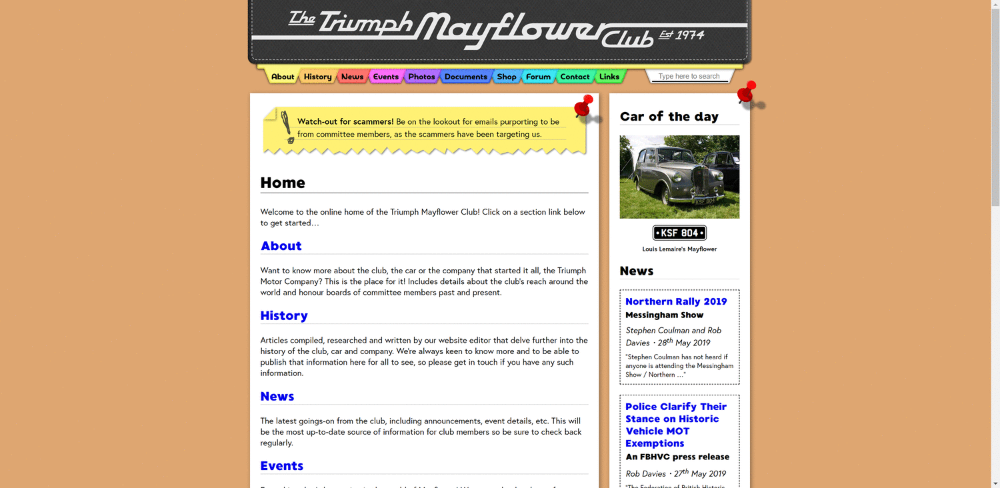
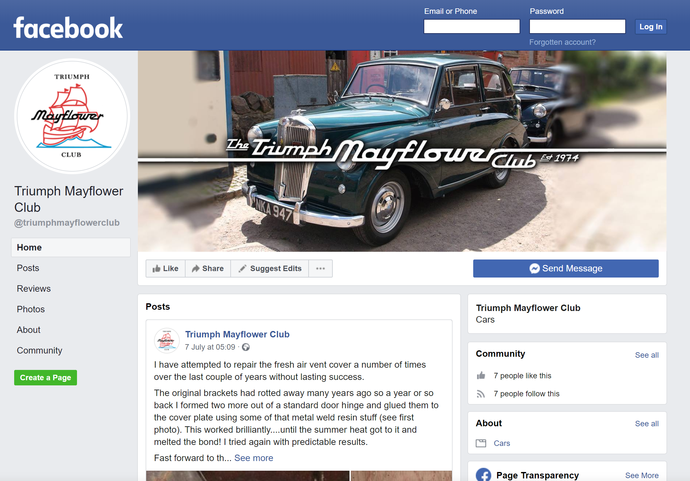
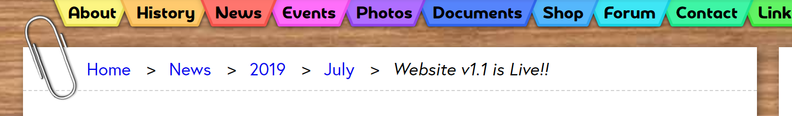
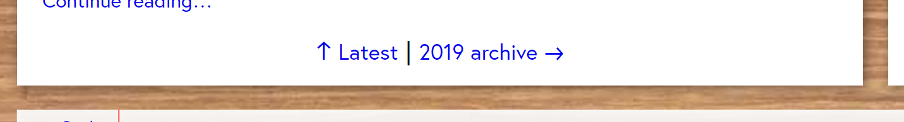
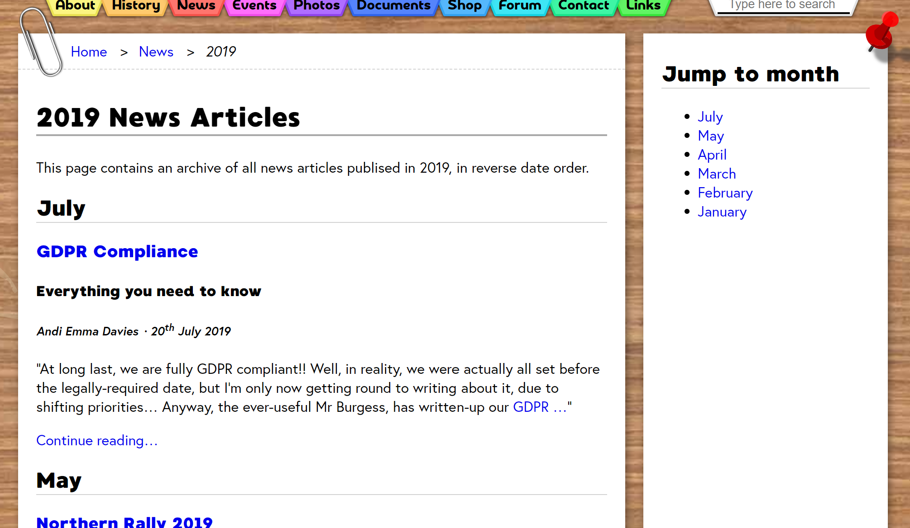
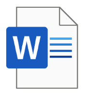
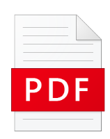

Website v1.1 is Live!!
It’s been a long time coming…
· 21st July 2019
Whew, it’s taken a lot longer than I’d hoped but I’m finally able to announce version 1.1 of the Triumph Mayflower Club website! Apologies it’s taken so long, but as my photo in the sidebar will attest, things have changed somewhat for me in the past 12 months – my coming to terms with being transgender has obviously had an impact on my mental health and ability to commit to regular website updates.
Nevertheless, I’m doing much better now, and I’ve been working tirelessly the last few months to cram all sorts of goodies into this release, so hopefully the wait will have been worthwhile. Fingers-crossed future releases won’t take quite as long to come to fruition…
The journey so far…
Let’s take a quick look at how we’ve got to this point. I wrote the very first piece of code for the website back in June of 2017, dad (Rob) had been working on the initial content not long before, and the site’s development was commissioned shortly prior to that too, so we’ve been developing this new website for over two years now, and we’ve been on quite a ride in that time! The brand spanking new website (version 1.0) was officially launched on 18th March of last year, so the site is now 1 year and 4 months old.
In the time since the website was first published, we have:
- Added 61 content updates, including event writeups, technical documentation, members’ classified listings, etc.
- Published 35 news articles, written by a number of different contributors.
- Scanned and archived 40 issues of Flower Power magazine.
- Had 17 new club members, a good handful of which we know were as a result of the new website.
- Facilitated the sale of a multitude of car parts, from both the club’s stock cache and our members’ classifieds.
- Kept our members informed of many event detail updates.
How high can we grow these figures by this time next year??
What’s new?
Anyway, enough about where we’ve been: let’s delve into some new, juicy updates.
1. A lick o’ paint
I’m sure the most obvious change is the shiny new visuals. When I first envisioned the look-and-feel of the website, I wanted to make it appear as if it were a wooden work desk, but I ran-out of time to complete this before the initial release, so I’ve been chipping-away at the rest of the graphics ever since.
The existing visual elements were: the top menu resembling a personal organiser, with coloured card dividers for each section, and Post-it notes for the drop-down menus; the main content of the page resembling a sheet of paper with printed details on; the sidebar as a scrap of paper that has been pinned to the desk; the footer as a spiral-bound notebook; and an MDF-coloured background.
The main elements I’ve added in this release are a proper woodgrain background texture and a variety of surrounding objects that might be found on an active desktop (ruler, biro, coffee mug, coffee stains, Sellotaped photos, newspaper clippings, paperclipped sheets). I’ve made a few other minor tweaks throughout too, but these here are the interesting ones.
I hope the quirky, playful feel of these graphics makes the site a joy to use, and a unique asset to our club that sets it apart from other classic car clubs. Here’s a comparison of the homepage before and after – quite a difference, wouldn’t you say? Click the animation to view it full-size:
2. Finished site footer
The details in the footer section of the website were never meant to be quite so sparse, but again I ran out of time to finish this before the website launched. These are the new items I’ve added:
- The website’s version number.
- Contact details for the website editor, chairman and vice chairman.
- The club’s emblem graphic.
- Direct links to our about, news and contact sections.
- A “call-to-action” button which takes users straight to the membership sign-up section.
- Social media links (more on this below).
3. Facebook page
Speaking of social media, our wonderful new publicity officer, Mark Smith, has kindly set us up with our own club Facebook page! Please do give us a “like” over on Facebook and engage with our posts so we can boost our online presence in the classic car club scene.
4. News archive
As mentioned previously, we’ve published a whopping 35 news articles in the time we’ve been online. As a result, the big long list of articles was quickly becoming unwieldly, so I needed to think of a better way to manage them. My solution was to introduce a date-based news archive, so that the main news overview page contains just the 10 most recent articles, then the archive consists of two pages: one for all articles written in 2019 and one for 2018 (with a month for each section). This system will come into its own more as our articles continue to grow in number.
The updated news article breadcrumb bar, featuring links to the archive pages/sections for the year and month the article was published in.
The new pagination controls at the bottom of news section pages that allow you to navigate forwards or backwards in time through the archive.
An example of one of the new archive pages.
5. News article template
While we’re on the topic of news, I’ve created a template Word document that people can use if they’d like to write and submit news articles to go on the website. It can be downloaded from the main news page – simply fill it out, following the guidelines inside it, and email your submission to Rob, our website editor, for proofing and scheduling to be published.
6. Editable membership forms
One of the aforementioned new members we’ve had as a result of the website suggested we make the membership PDFs directly editable, so that most of the filling-out can be done on the computer then simply printed, signed and posted to our membership secretary. Thanks, Trevor Adams, for the great suggestion – this is a great stepping-stone to where we want to eventually be with online membership purchasing!
7. GDPR compliance
As a club, we are now fully compliant with the EU’s new General Data Protection Regulation. I wrote a news article about this yesterday, so please check it out for details. Thanks also to Paul Burgess, as usual, for working hard to make sure our policy documentation was available before the legal deadline.
8. 2019 AGM minutes
And, last but not least, I finally got round to uploading the minutes from this year’s AGM – better late than never!
What’s next?
So, that’s a comprehensive look at what’s new. What things have we got planned for the next phase of development?
Our top priority now will be to create a new members-only section of the website. This will take some time for me to implement the mechanics of this new system, so a lot of my time will be going into this next, for version 1.2. The idea is that only members should have access to certain portions of the wealth of information we’ve made available on this platform, so by restricting access to only paying members, we can actively encourage new members to join.
You’ve probably noticed at one point or another that the search box in the top-right corner of the page doesn’t actually do very much yet… I’m working on developing a bespoke search engine that will allow us to search for any content on our website, including resources like scanned PDFs, so that it’s much quicker to get to the information you need when you need it. I started work on this a while back, but it had to go on the backburner for a while, and I’m hoping to resume work on it after the members-only feature is complete, ready for v1.3.
There are a few other things I will continue to work on too. Technical behind-the-scenes restructuring of the website code will enable me to write more-powerful features as time goes on. I plan to train my dad (website editor) in some of the more technical aspects of the website, so that he can hopefully contribute content files more independently, and I’ll also develop some tools to help him do just that, so that we can reduce the bottleneck of relying on myself before content can go on the site. I would also like to write some proper deployment scripts which will speed-up the process of publishing updates to the live website.
Long-term ambitions
We have plenty of ideas for where the website could go in future, but these are some of the key ones:
- A news article authoring platform which would enable club members to author and submit news articles entirely without need for technical intervention from me! Once submitted, the website editor will be able to review, proofread and schedule the article to go live directly from this system, which means we can get more content out there in a much shorter timeframe (and hopefully written by lots more different people too).
- The ability to pay for membership online and buy spares, cars and regalia online directly through the website. This would dramatically shorten the time required to become a member, such that prospective members can start reaping the benefits of doing so immediately, bringing us into the modern age of e-commerce.
- A forum system to enable members to discuss any topic with all other members online, in a way that other members can then see the results of the discussion and gain valuable knowledge from subject experts. This would also be invaluable for arranging events and meetups with other member.
Wrap-up
Okay, that’s quite enough waffling from me! Thank you all for being patient while I worked to get myself to a better place. I hope you can all see from this that I am still very much committed to making our website a first-class resource for members and historians alike, as well as providing a ringing endorsement for the work we do as a club, and making us an online presence to be reckoned with. I look forward to working with you all going forward to preserve our wonderful club and hopefully attract the next generation of members.
À bientôt!
Andi (website developer)